Red Hat OpenShift GitOps
OpenShift GitOps leverages Argo CD to manage and deploy applications using a Git-based approach, enabling auditable, versioned, and repeatable deployments.
Argo CD continuously monitors our Git repository for changes and ensures the deployed state matches the declared desired state defined in Kubernetes manifests. This allows for scalable, resilient, and declarative application management, with a clear separation of duties between developers and operators.
In the previous section, Tekton handled the CI cycle, building the application image and leaving the platform ready for CD.
In this section, we use the quarkus-petclinic-config repository, which contains configuration files for deploying the application with the previously built image across environments.
-
Open the
quarkus-petclinic-configrepository, branchcnd, and inspectenvironments/dev/kustomization.yaml. The latest commit updates the image digest (00d58…), corresponding to the image built in CI.
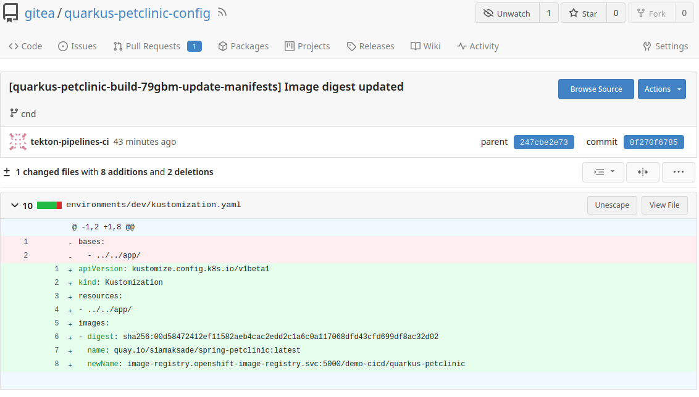
-
Open the Argo CD dashboard to see the synchronized applications.
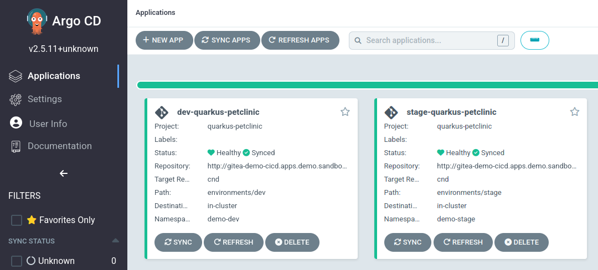
-
Click
dev-quarkus-petclinic. -
At the top, verify it shows
Synchronized To cnd (xxx), wherexxxis the commit hash from the Git repository, matching the previous step.
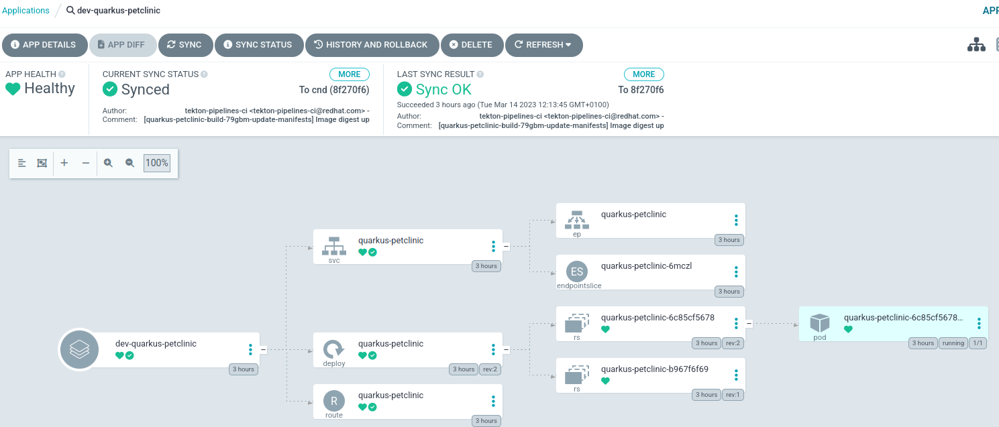
-
Click the pod component
quarkus-petclinic-xxxx. -
In the SUMMARY under IMAGES, verify the deployed image has the updated sha.
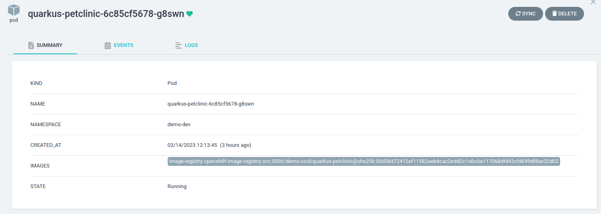
-
In the OpenShift console, check the pod and route are deployed with the new image in the
demo-devproject.
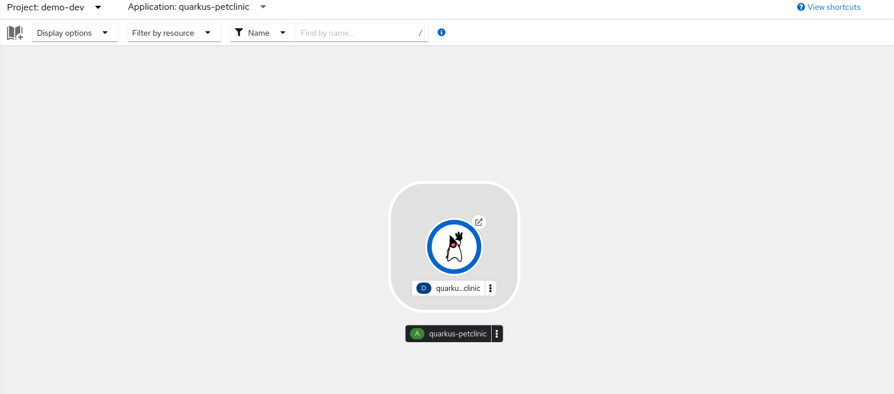
Once tests pass in the development environment, we can promote the image to the stage environment. The CI pipeline creates a Pull Request in the cnd branch of quarkus-petclinic-config updating the image sha in environments/stage/kustomization.yaml.
-
Open the
environments/stage/kustomization.yamlfile in the repository; a PR is pending.
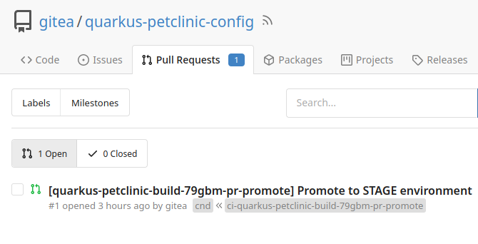
-
Open the PR.
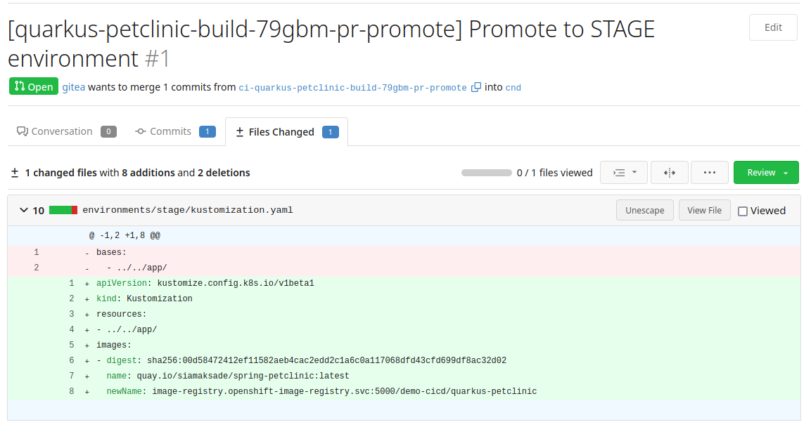
-
Merge the PR.
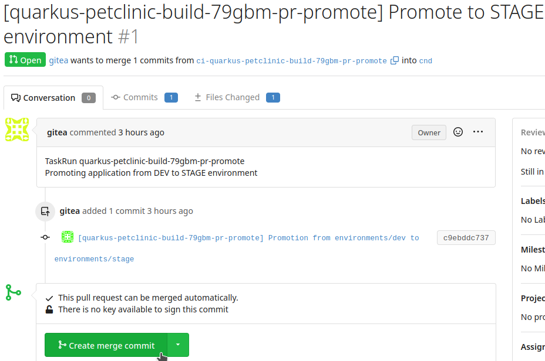
After merging, Argo CD updates the platform state and deploys the new image in the demo-stage project.
-
In the Argo CD dashboard, select the
stage-quarkus-petclinicapplication.
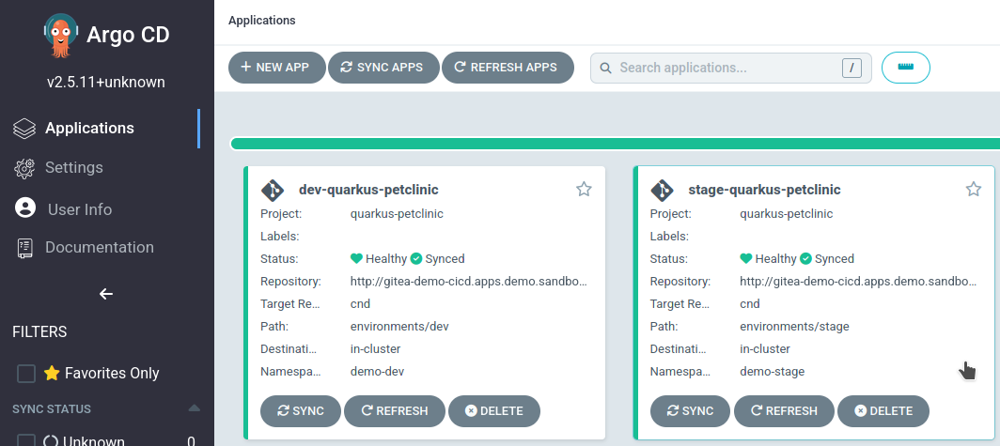
-
Verify the synchronized hash matches the Git repository.
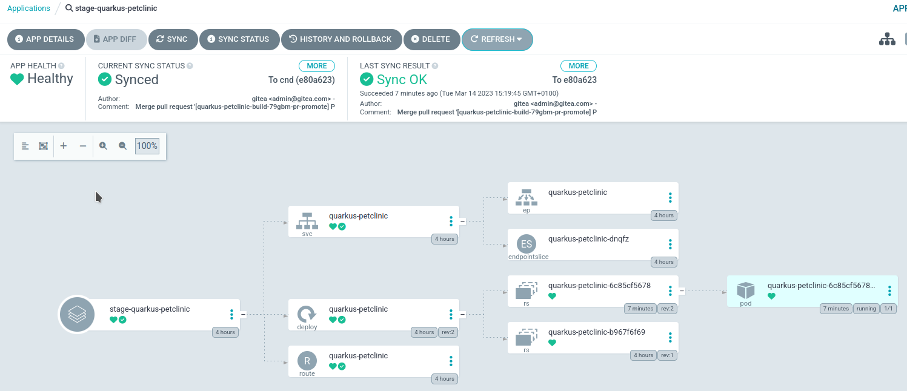
-
Confirm the deployed pod uses the desired image sha.
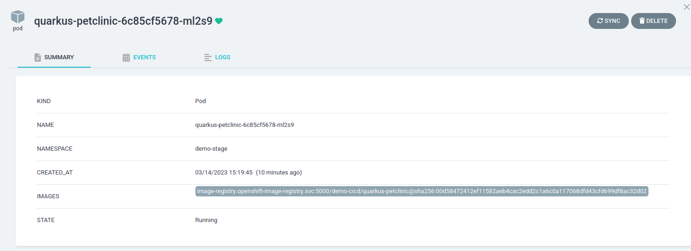
-
In the OpenShift console, check the new pod is running with the updated image.
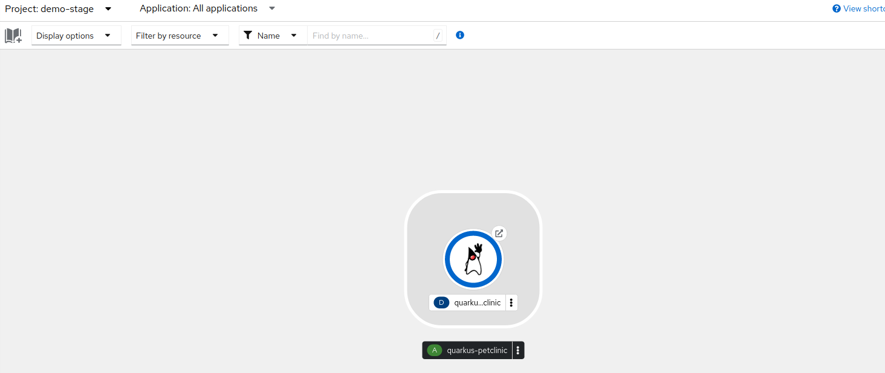